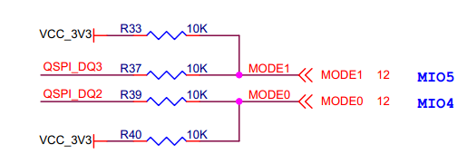

XME0726 Reference Manual
Development Environment:
Vivado 2018.3 is from Xilinx website
WeChat Public Number:

●1. Overview
XME0726 is a system module based on Xilinx Zynq-SoC (XC7Z010 or XC7Z020) from Microphase Technology.
It integrates 1GByte DDR3 RAM, 32MByte SPI flash, Gigabit Ethernet PHY transceiver and a large number of configurable I/Os expandable via high-speed connectors. With a size of only 4.5 x 3.5cm, the module is small and flexible enough to be used in a wide range of applications.
The core board extends 120 single-ended IOs on the PL side (can be configured as 60 pairs of differential IOs), with adjustable IO voltages; 32 IOs on the PS side, and a Gigabit Ethernet PHY, with equal-length differential processing of the FPGA pin-to-connector alignment, and impedance of 50 ohms single-ended and 100 ohms differential. This is very important for high-speed signal transmission application scenarios.
○Board Layout

○Key Features
Xilinx Zynq™ XC7Z010-1CLG400C (7010 Version Only),
Xilinx Zynq™ XC7Z020-2CLG400C (7020 Version Only).DDR3: PS 1GB DDR3 RAM.
Flash: 256Mbit QSPI Flash.
LED: 1 Power LED, 1 FPGA Done LED;
1 PS users LED.MIO: 32 MIOs, 8 IOs at 3.3V, 24 IOs at 1.8V.
PL GPIO: 120, Adjustable Voltage, 60 LVDS Pairs.
Giga ETH: 10/100/1000M Adaptive
USB Host: USB2.0 PHY(USB3320)
CLOCK: 1 33.33Mhz active crystal oscillator provides a stable clock for the PS system.
Connectors: 2 * 120pin High Speed B2B Connectors
○Block diagram

○Mechanical Spec

●2. Function Resources
○FPGA
667 MHz dual-core Cortex-A9 processor
DDR3L me mory controller with 8 DMA channels and 4
High-Performance AXI3 Slave ports
High-bandwidth peripheral controllers: 1G Ethernet, USB 2.0, SDIO
Low-bandwidth peripheral controllers: SPI, UART, CAN, I2C
Programmable from JTAG, Quad-SPI flash, and microSD card
Programmable logic equivalent to Artix-7 FPGA
LUTs: 17,600 (7010)
53,200(7020)
DSP Slices: 80 (7010)
220 (7020)
Logic Cells: 28K (7010)
85K(7020)
Flip-Flops: 35,200 (7010)
106,400 (7020)
Total Block RAM: 2.1Mb (7010)
4.9Mb (7020)Analog Mixed Signal (AMS) / XADC: 2x 12 bit, MSPS ADCs with up to 17 Differential Inputs
Security: AES & SHA 256b Decryption & Authentication for Secure Programmable Logic Config
○DDR3
The module uses two 16-bit DDR3 memory chips, with a capacity of 512MB for a single chip and 1GB for two chips.
| Signal Name | PIN Number | Signal Name | PIN Number |
|---|---|---|---|
| PS_DDR3_A0 | N2 | PS_DDR3_D9 | E3 |
| PS_DDR3_A1 | K2 | PS_DDR3_D10 | G3 |
| PS_DDR3_A2 | M3 | PS_DDR3_D11 | H3 |
| PS_DDR3_A3 | K3 | PS_DDR3_D12 | J3 |
| PS_DDR3_A4 | M4 | PS_DDR3_D13 | H2 |
| PS_DDR3_A5 | L1 | PS_DDR3_D14 | H1 |
| PS_DDR3_A6 | L4 | PS_DDR3_D15 | J1 |
| PS_DDR3_A7 | K4 | PS_DDR3_D16 | P1 |
| PS_DDR3_A8 | K1 | PS_DDR3_D17 | P3 |
| PS_DDR3_A9 | J4 | PS_DDR3_D18 | R3 |
| PS_DDR3_A10 | F5 | PS_DDR3_D19 | R1 |
| PS_DDR3_A11 | G4 | PS_DDR3_D20 | T4 |
| PS_DDR3_A12 | E4 | PS_DDR3_D21 | U4 |
| PS_DDR3_A13 | D4 | PS_DDR3_D22 | U2 |
| PS_DDR3_A14 | F4 | PS_DDR3_D23 | U3 |
| PS_DDR3_BA0 | L5 | PS_DDR3_D24 | V1 |
| PS_DDR3_BA1 | R4 | PS_DDR3_D25 | Y3 |
| PS_DDR3_BA2 | J5 | PS_DDR3_D26 | W1 |
| PS_DDR3_NCAS | P5 | PS_DDR3_D27 | Y4 |
| PS_DDR3_CKE | N3 | PS_DDR3_D28 | Y2 |
| PS_DDR3_CLK_N | M2 | PS_DDR3_D29 | W3 |
| PS_DDR3_CLK_P | L2 | PS_DDR3_D30 | V2 |
| PS_DDR3_NCS | N1 | PS_DDR3_D31 | V3 |
| PS_DDR3_DM0 | A1 | PS_DDR3_DQS_N0 | B2 |
| PS_DDR3_DM1 | F1 | PS_DDR3_DQS_N1 | F2 |
| PS_DDR3_DM2 | T1 | PS_DDR3_DQS_N2 | T2 |
| PS_DDR3_DM3 | Y1 | PS_DDR3_DQS_N3 | W4 |
| PS_DDR3_D0 | C3 | PS_DDR3_DQS_P0 | C2 |
| PS_DDR3_D1 | B3 | PS_DDR3_DQS_P1 | G2 |
| PS_DDR3_D2 | A2 | PS_DDR3_DQS_P2 | R2 |
| PS_DDR3_D3 | A4 | PS_DDR3_DQS_P3 | W5 |
| PS_DDR3_D4 | D3 | PS_DDR3_NRST | B4 |
| PS_DDR3_D5 | D1 | PS_DDR3_ODT | N5 |
| PS_DDR3_D6 | C1 | PS_DDR3_NRAS | P4 |
| PS_DDR3_D7 | E1 | PS_DDR3_NWE | M5 |
| PS_DDR3_D8 | E2 | **** |
○Giga ETH
The RTL8211F chip supports 10/100/1000M network transfer rate and communicates with the MAC layer of the Zynq7000 PS system via the RGMII interface. It supports MDI/MDX adaptation, multiple speed adaptation, master/slave adaptation and MDIO bus support for PHY register management.
○JTAG
The JTAG signal link of the XME0726 is connected to the expansion connector.
| Signal | JM3 Pin Number | Explain |
|---|---|---|
| FPGA_TCK | Pin103 | Input (3.3V) |
| FPGA_TDI | Pin99 | Input (3.3V) |
| FPGA_TDO | Pin101 | Output (3.3V) |
| FPGA_TMS | Pin105 | Output (3.3V) |
○Boot Config
ZYNQ startup mode by configuring the MODE1(JM3 PIN108), MODE0(JM3 PIN106), the core module ZYNQ configuration schematic is shown below.

| Mode | MODE1(JM3 PIN108) | MODE0(JM3 PIN106) |
|---|---|---|
| JTAG | Connection to GND | Connection to GND |
| QSPI | NC | Connection to GND |
| SD | NC | NC |
○Quad-SPI Flash
On-board 256M Quad-SPI Flash memory W25Q256FVEI is used to store initial FPGA configuration and user’s application as well as data.
| Position | Model | Capacity | Factory |
|---|---|---|---|
| U7 | W25Q256FVEI | 256 Byte | Winbond |
○Clock
The XME0726 core board provides a 33.3Mhz active clock for the PS system.
The clock for the PL section can be generated by the PLL in the PS section, or the user can use it as a clock input to the PL section by connecting an external clock source to the dedicated clock pin of the module.
| Position | Signal Name | Frequency | Pin Number |
|---|---|---|---|
| Y2 | PS_CLK_33d3 | 33.333Mhz | E7 |
○Power
Please note that the power input of XME0726 is +5V. We recommend using a 5V/2A power supply.
Once the module is powered up, it will be cascaded in order to complete the power-up process in the following sequence: 1.0V- > 1.8V-> 1.5V- > 3.3V. The 3.3V output will be powered up last, and at the same time, it will provide the PG signal of system power status.
○LED
The XME0726 board provides three LEDs, the power indicator, the FPGA configuration status light and the PS-controlled user LED.
The LED signals are described in the following table.
| LED | FPGA Pin | Explain |
|---|---|---|
| D5 | - | Power LED |
| D2 | R11 | FPGA configuration status LED, LED on when FPGA successful configuration |
| D3 | E6 | LED on when Bank500 MIO0 output is |
○Expansion Ports
The XME0726 uses two sets of connectors, JM1 and JM3, for the FPGA IO signals and Ethernet interface.
2 x AXK5A2137YG, 120Pin, 0.5mm Pitch
| Core Board Connector Models | Based Board Connector Models | Manufacturers | Mated height |
|---|---|---|---|
| AXK5A2137YG | AXK6A2337YG | Panasonic | 3mm |
FPGA Bank, Number of IOs vs. B2B Connector Table
| FPGA Bank | B2B Connector | IO Number | Voltage | Explain |
|---|---|---|---|---|
| Bank500 | JM1 | 8 | 3.3V | |
| BANK501 | JM1 | 24 | 1.8V | |
| Bank35 | JM1 | 48 | Adjustable | 48 single-ended, can be mated to 24 differential pairs |
| Bank12 | JM3 | 48 | Adjustable | 48 single-ended, can be mated to 24 differential pairs |
| Bank13 | JM3 | 24 | Adjustable | 24 single-ended, can be mated to 12 differential pairs |
Description:
Bank35 IO level depends on JM1 Pin29&30 voltage input, input range 1.2V~3.3V.
Bank34 IO level depends on JM3 Pin29&30 voltage input, input range 1.2V~3.3V.
Bank13 IO level depends on JM3 Pin89&90 voltage input, input range 1.2V~3.3V.
MIO8-MIO15 (JM1 Pin111-Pin118), JTAG,RESET (JM1 Pin99~Pin108) level is 3.3V.
MIO28-MIO51 (JM1 Pin81-Pin108) level is 1.8V.
Please refer to the ‘XME0726_Pinout _Table’ for detailed pin definitions of the XME0726.